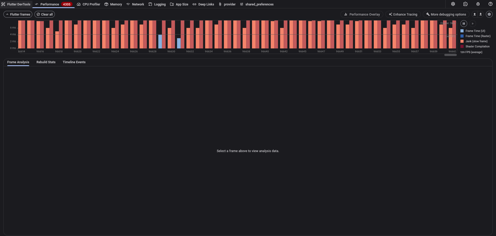
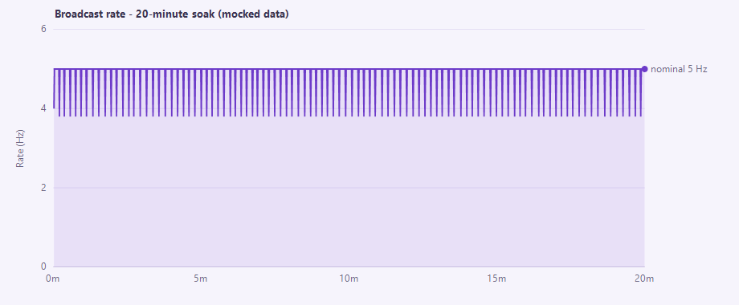
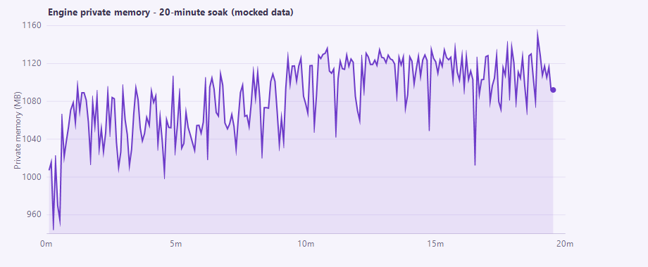
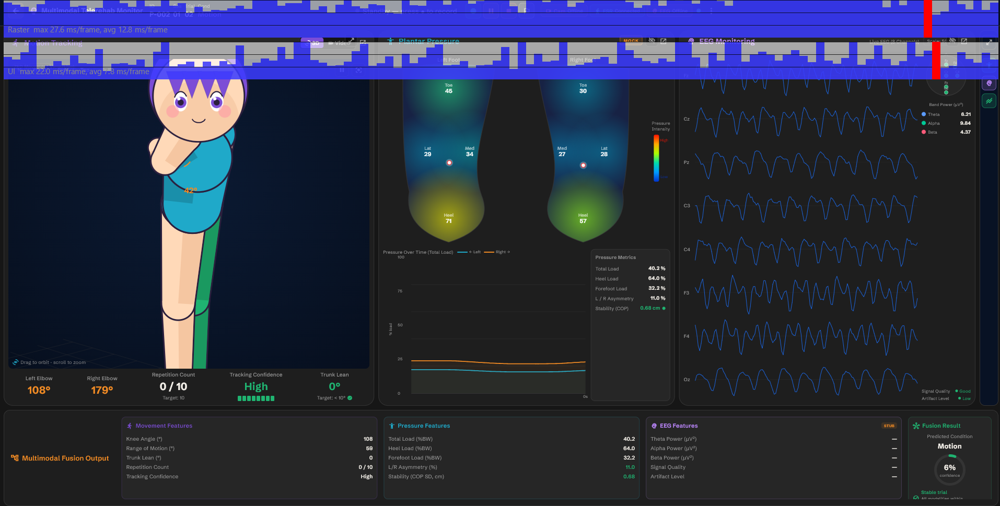

Project: TeleRehab Dashboard (Flutter desktop) + capture engine (Unity) Report date: 2026-08-05 Prepared by: _[author / to complete]_ Document version: 1.1 Status: Complete — verdict PASS (one deferred cosmetic item) Rev 1.1 (2026-08-10): added §7 Real-hardware validation (EEG + ZED); corrected the recorded-skeleton rate claim (§4.3, F5/F7).
The TeleRehab system was performance-tested as a single-user, real-time capture application rather than a multi-user server. Testing therefore targeted the quality attributes that actually govern such a system — time behaviour (latency, throughput), resource utilisation, and capacity — as defined by the software-product-quality standard ISO/IEC 25010 (International Organization for Standardization [ISO], 2011).
Three test stages were executed against the running system: (1) data-pipeline throughput and latency, (2) user-interface smoothness, and (3) endurance (soak). All three passed. The communication bridge sustained its nominal broadcast rate with single-digit-millisecond command latency and no degradation under either concurrent-client load or a 20-minute soak; process memory stabilised rather than growing without bound, indicating no memory leak (cf. software-aging theory; Huang et al., 1995).
A subsequent real-hardware validation (§7) — a live Unicorn EEG headset and a ZED 2i camera in an 8.5-minute recorded session — confirmed the pipeline holds under genuine sensor load and that EEG records losslessly at 250 Hz (zero dropped samples). It refined two points: the live ZED skeleton is recorded at the ~5 Hz update rate (not the camera's full rate), and engine memory grows with recording length as samples are buffered before save.
The only defect identified is transient shader-compilation jank in the UI — a first-use rendering stutter that is cosmetic and does not affect data integrity or steady-state performance. The modern remedy (the Impeller renderer) proved unusable on the test hardware and the item was accepted as-is and deferred.
| Stage | Metric | Result | Verdict |
|---|---|---|---|
| 1 — Pipeline | Broadcast rate / RTT / fan-out | 5 Hz held; RTT median 4 ms; 5 clients = no impact | Pass |
| 2 — UI | CPU / memory / frame rate | ~1.7 cores; flat ~314 MB; ~79 fps | Pass (cosmetic jank) |
| 3 — Endurance | Rate & memory over 20 min | Rate flat; memory plateaued (no leak) | Pass |
| Real-hardware (EEG + ZED) | Dropped EEG frames · skeleton rate | 0 dropped @ 250 Hz; skeleton ~5.3 Hz | Pass |
The TeleRehab Dashboard is a Flutter Windows desktop application used by a clinician to configure, run, and review rehabilitation sessions. It communicates with a Unity capture engine ("Smart Game") over a local WebSocket (ws://localhost:8765). The engine streams sensor frames (motion/skeleton, plantar pressure, EEG) to the dashboard and receives session-control commands. Recorded data is written to the local filesystem.
Architecturally the system is single-user and single-machine: one clinician, one dashboard, one engine, communicating over loopback. There is no multi-user server tier.
Conventional load-testing tools (e.g. LoadRunner) are designed to answer "does the server tier hold up under N concurrent users?" by simulating many virtual users against a shared back-end. That question is not meaningful here: there is no multi-user server to load, and the client UI is a compiled desktop application whose rendering surface is not driven by such tools.
The performance risks that are meaningful for a real-time capture application are latency, throughput, timing jitter, interactive smoothness, and endurance (Molyneaux, 2014; Jain, 1991). Testing was scoped accordingly. Where a load dimension does exist — the engine broadcasting to multiple connected dashboards — it was tested directly as a capacity check (§4).
| ISO/IEC 25010 sub-characteristic | Concrete objective | Stage |
|---|---|---|
| Time behaviour | Broadcast throughput, command round-trip latency, timing jitter | 1, 3 |
| Resource utilisation | CPU and memory of the dashboard and engine processes | 2, 3 |
| Capacity | Behaviour of the bridge under multiple concurrent clients | 1 |
Interactive responsiveness targets draw on established human-computer-interaction limits: the 0.1 s / 1 s / 10 s response thresholds (Miller, 1968; Nielsen, 1993) and evidence that input-to-output lag degrades interactive task performance (MacKenzie & Ware, 1993).
| Component | Detail |
|---|---|
| OS | Windows 11 Enterprise, 16 logical cores |
| Dashboard | Flutter 3.44.0 (stable); Windows profile build (release-representative, profiler-attachable) |
| Engine | Unity build "Smart Game"; WebSocket bridge on ws://localhost:8765; nominal broadcast interval ≈ 200 ms (~5 Hz) |
| Sensors (Stages 1–3) | None attached — synthetic/mock (a later real-hardware run used a live EEG + ZED 2i; see §7 and Limitations §9) |
| Instrumentation | tool/ws_perf_test.dart (synthetic client), tool/sample_resources.ps1 (process sampler), Flutter DevTools (frame timeline) |
Running the UI in profile rather than debug mode is essential: debug builds run the Dart VM in JIT with assertions enabled and report frame times several times slower than a real build, which would invalidate any smoothness measurement.
sensor_update frames received per second at ameasured client. Nominal target = 1 / broadcast interval.
ping/pong; the client timestamps a ping, the engine echoes it, and the client records the elapsed time. The offset/round-trip estimation follows the Network Time Protocol approach (Mills et al., 2010, RFC 5905) — the same method the production code uses to align marker timestamps.
sensor_update stream carries no sequencecounter, so frame loss/irregularity is inferred from inter-arrival variation — the spread (p95, max) of the gaps between consecutive frames. This is jitter in the sense of delay variation formalised by RFC 3393 (Demichelis & Chimento, 2002).
100 % = one full core) and memory (working set and private bytes), sampled over time.
degradation and resource leaks (Meier et al., 2007). Monotonic, unbounded resource growth over uptime is the classic signature of software aging via memory leak (Huang et al., 1995).
A purpose-built synthetic client (tool/ws_perf_test.dart, pure Dart) reproduces the dashboard's wire protocol: it connects to the bridge, optionally drives a session (configure_session → start_session [→ start_recording]), subscribes to the broadcast stream, and records per-second throughput, inter-arrival statistics, RTT, and payload size to CSV. It supports multiple concurrent clients to test broadcast fan-out. A companion PowerShell sampler records process CPU and memory. The full procedure is documented in PERF_TESTING.md.
The engine was driven into its capture (preview) state so sensor frames streamed at the nominal rate; no hardware was required because the engine broadcasts during preview. The synthetic client measured throughput, inter-arrival jitter, and command RTT for 60 s with a single client, then the broadcast fan-out was tested by attaching 5 concurrent clients (one measured, four as pure load).
| Metric | 1 client (60 s) | 5 clients (fan-out) |
|---|---|---|
| Broadcast rate (mean / min / max) | 4.88 / 4.00 / 5.00 Hz | 4.89 Hz |
| Inter-arrival p95 | ~206 ms | ~205 ms |
| Command RTT (median / p95 / max) | 4 / 14 / 18 ms | 5 / 10 / 17 ms |
| Payload (mean) | ~860 B | ~910 B |
| Warm-up to first frame | 21.5 s | — |
loopback and jitter is tight around the 200 ms nominal frame period. Adding five concurrent dashboards produced no measurable change in rate, latency, or jitter — the capacity margin for this usage is ample.
interval), bounding how smoothly the live figure moves. Its effect on recorded data was later measured directly (§7) and is mixed: EEG is recorded at its full 250 Hz, but the live ZED skeleton is persisted on the same ~5 Hz update tick — not the camera's native rate (full-rate skeleton stays recoverable offline from the SVO video). The broadcast interval is a design tunable; the recorded-skeleton rate is a fidelity consideration (F7).
timeout (no camera attached), after which it previews regardless — not a scene-loading cost.
session (configure_session + start_session) without first returning the engine to its menu reloads the capture scene and re-initialises the camera without releasing the prior instance; after several such cycles with no camera attached, sensor initialisation hung. This is reachable if an operator starts a new session without ending the previous one, and is recorded in the project backlog for verification with real hardware.
The dashboard was launched in profile mode with its built-in synthetic ("mock") data sources enabled, animating the live-monitor screen (the heaviest-rendering view, including the 3D avatar). Frame timing was recorded in Flutter DevTools' Performance timeline while interacting (switching avatar styles, opening panels), and the dashboard process's CPU and memory were sampled in parallel for 60 s.
| Metric | Result |
|---|---|
| CPU (mean / range) | 10.6 % / 9.2–12.0 % of total capacity (≈ 1.7 of 16 cores) |
| Working-set memory | ~314 MB, drift +1 MB over 60 s |
| Private memory | ~335 MB, flat |
| Frame rate (observed) | ~79 fps |
| Frame timeline | Mostly within budget, with recurring shader-compilation spikes |
animating, memory flat over the window (no growth). The steady cost is attributable to the synthetic data forcing a full UI rebuild at 10 Hz plus the 3D-avatar repaint; real capture data arrives more slowly (~5 Hz), so live-mode cost should be comparable or lower.
frames to shader compilation — on the Skia backend, each distinct gradient/glow shader is compiled at runtime on first use, blowing that frame's budget. The trigger paints are the gradient-based sensor panels (EEG intensity blobs, plantar/foot heatmaps) and the neon-glow avatar style. Because each shader compiles only once and is then cached, this is a transient, first-use cost, not a steady-state problem — consistent with the otherwise-smooth ~79 fps and flat resources. Its relevance is grounded in evidence that input-to-output lag and frame irregularity degrade interactive performance (MacKenzie & Ware, 1993; Nielsen, 1993).
shaders and eliminates this jank class by design. It was enabled (--enable-impeller) and confirmed active (OpenGL backend), but rendered a black screen on the test machine's GPU/driver — the desktop Impeller backend is immature in Flutter 3.44 on Windows. The fix is therefore not currently viable here.
otherwise-smooth UI) and deferred. The Skia-path remedy — SkSL shader warm-up bundling — is documented as an option if polish is later required. This engine behaviour is vendor/engineering documentation, not peer-reviewed literature, and is cited as such.

A single session was driven and recorded continuously for 20 minutes (1,200 s) while the synthetic client logged per-second throughput, jitter, and RTT, and the sampler recorded the engine process's CPU and memory every 5 s. Endurance testing of this kind is the standard method for exposing slow degradation and leaks (Meier et al., 2007).
Broadcast pipeline (per-second, n = 1,200):
| Window | Mean rate |
|---|---|
| 0–5 min | 4.91 Hz |
| 5–10 min | 4.92 Hz |
| 10–15 min | 4.92 Hz |
| 15–20 min | 4.92 Hz |
Seconds below 4 Hz: 0. Worst single stall: 238 ms. RTT median / p95 / max: 3 / 7 / 22 ms.
Engine process (5 s cadence): CPU steady at ~10.5 % (≈ 1.7 cores) start to finish; private memory rose from ~1,007 MB to ~1,110 MB over the first ~10 minutes, then plateaued for the remainder.


five-minute quarters, with zero sub-nominal seconds and low, stable latency — the pipeline does not drift over time.
(caches and recording buffers filling) and then stabilised. A true leak produces continued, roughly linear growth over uptime (Huang et al., 1995); the observed plateau is the opposite signature and indicates bounded, healthy behaviour over this window.
Limitation 1 of the initial report — that the synthetic runs did not exercise the real high-rate writers — was addressed with a live-hardware session on 2026-08-10: a Unicorn Hybrid Black EEG headset (8 channels, 250 Hz) on COM7 and a ZED 2i camera tracking a body, recorded for 8 min 33 s while the passive client measured the pipeline and a sampler recorded engine resources.
The session was driven from the real dashboard — exercising the actual EEG port-selection, connect-retry, and signal-quality path — with a person wearing the headset in the camera's view. The synthetic client measured the broadcast stream passively; the sampler recorded the engine and dashboard processes every 5 s.
| Measure | Result |
|---|---|
| EEG samples recorded | 128,373 at 250.1 Hz (session eeg.csv) |
| EEG dropped samples | 0 (0.000 %) — counter sequential 1 → 128,373 |
| EEG link stability | Locked on COM7; no mid-session disconnect (Player.log) |
| ZED skeleton frames | 2,737 at 5.33 Hz (update-tick rate, not camera rate) |
| Broadcast rate under load | 5.33 Hz (vs 4.9 Hz synthetic) |
| Command RTT (median / p95 / max) | 5 / 13 / 23 ms |
| Payload per frame | 2,815 B (≈ 3.3× synthetic — real skeleton + EEG) |
| Engine CPU | 16.5 % (≈ 2.6 cores; vs ~10.5 % synthetic) |
| Engine memory (private) | 2.79 → 2.98 GB, rising over the run |
| EEG signal quality (live) | Good · artifact Low (8 ch; band power θ 6.2 / α 9.8 / β 4.4 µV²) |
| Live-monitor UI render (real data) | raster avg 14.6 ms / max 30.6 ms; UI avg 9.6 ms (≈ 68 fps) |
were maintained even though each frame carried ~3.3× the payload (real skeleton + EEG) and the engine was decoding EEG at 250 Hz and tracking a body.
at exactly 250 Hz — the decode kept up with the stream without a single gap — and the live monitor reported Good signal quality with Low artifact, confirming proper reference/ground electrode contact. This is the headline result the synthetic tests could not provide.
monitor updated all modalities — 8-channel EEG with computed band power, the ZED skeleton, and mock plantar pressure — while the Flutter performance overlay showed raster avg 14.6 ms/frame (max 30.6 ms). That is slightly heavier than the mock Stage 2 (~79 fps), as expected from rendering real skeleton + EEG waveforms, and still comfortably interactive.
update tick (~200 ms), so recorded kinematics are ~5.3 Hz — adequate for slow rehabilitation movement (Nyquist ≈ 2.6 Hz) but coarse for faster motion. The SVO video is full-rate, so higher-resolution skeleton can be re-extracted offline.
5 minutes because EEG samples and skeleton frames are buffered in RAM until the session is saved (and the SVO streams to disk). This is session buffering, not a leak, but it grows with session length — a full-length study session should be confirmed to fit in RAM.

| # | Finding | Severity | Disposition |
|---|---|---|---|
| F1 | Bridge sustains 5 Hz with single-digit-ms RTT; no fan-out impact | — | Pass |
| F2 | UI resource use bounded (~1.7 cores, flat memory), ~79 fps | — | Pass |
| F3 | No throughput drift or memory leak over 20-min soak | — | Pass |
| F4 | Transient shader-compilation jank in the UI | Low (cosmetic) | Accepted / deferred; Impeller not viable on this GPU |
| F5 | Live-view broadcast capped at ~5 Hz | Informational | By design (broadcast tunable) |
| F6 | Repeated session re-drive can hang sensor init | Medium (reliability) | Backlog; verify with hardware |
| F7 | Recorded ZED skeleton is ~5.3 Hz (update tick), not camera rate | Low–Medium (data fidelity) | Adequate for slow movement; full rate recoverable from SVO offline |
| F8 | Engine recording memory grows with session length (sample buffering) | Low (scalability) | Not a leak; confirm long sessions fit in RAM |
| F9 | EEG records losslessly at 250 Hz under real load (0 dropped over 8.5 min) | — | Pass — real-hardware validated (§7) |
Overall verdict: PASS. The system meets its real-time performance objectives, now including a real-hardware run in which EEG recorded losslessly (F9). The single genuine defect (F4) is cosmetic; the recorded-skeleton rate (F7), recording-memory growth (F8), and the re-drive hang (F6) are refinements and observations recorded for follow-up.
physical sensors. A subsequent real-hardware session (live EEG + ZED 2i, 8.5 min) confirmed lossless EEG recording and pipeline stability under true load; a longer real-hardware soak would still strengthen the recording-memory-growth picture (F8).
memory plateau is reassuring, but a multi-hour soak would strengthen the no-leak conclusion for very long sessions.
configuration; the Impeller black-screen (F4) in particular is GPU/driver- and Flutter-version-specific.
any physical-network component (none exists in the deployment).
longer real-hardware session (> 30 min) to confirm recording-memory growth (F8) stays within RAM, and decide whether the ~5 Hz recorded-skeleton rate (F7) is adequate for the intended movements (or plan to re-extract from the SVO offline).
configured on the same COM port, and investigate the repeated-re-drive sensor hang (F6).
a Direct3D backend); if staying on Skia, bundle SkSL shader warm-up to remove the first-use jank (F4).
PERF_TESTING.md) before releases to catchpipeline, UI, or endurance regressions.
Demichelis, C., & Chimento, P. (2002). IP Packet Delay Variation Metric for IP Performance Metrics (IPPM) (RFC 3393). IETF. https://www.rfc-editor.org/rfc/rfc3393.html
Huang, Y., Kintala, C., Kolettis, N., & Fulton, N. D. (1995). Software rejuvenation: Analysis, module and applications. Proceedings of the 25th International Symposium on Fault-Tolerant Computing (FTCS-25), 381–390.
International Organization for Standardization. (2011). ISO/IEC 25010:2011 — Systems and software engineering — SQuaRE — System and software quality models. (Rev. 2023). https://iso25000.com/index.php/en/iso-25000-standards/iso-25010
Jain, R. (1991). The Art of Computer Systems Performance Analysis. John Wiley & Sons.
MacKenzie, I. S., & Ware, C. (1993). Lag as a determinant of human performance in interactive systems. Proceedings of the INTERACT '93 and CHI '93 Conference on Human Factors in Computing Systems, 488–493. https://doi.org/10.1145/169059.169431
Meier, J. D., Farre, C., Bansode, P., Barber, S., & Rea, D. (2007). Performance Testing Guidance for Web Applications. Microsoft Corporation (patterns & practices). https://learn.microsoft.com/en-us/previous-versions/msp-n-p/bb924375(v=pandp.10)
Miller, R. B. (1968). Response time in man-computer conversational transactions. Proceedings of the AFIPS Fall Joint Computer Conference, 33, 267–277.
Mills, D., Martin, J., Burbank, J., & Kasch, W. (2010). Network Time Protocol Version 4: Protocol and Algorithms Specification (RFC 5905). IETF. https://www.rfc-editor.org/rfc/rfc5905.html
Molyneaux, I. (2014). The Art of Application Performance Testing (2nd ed.). O'Reilly Media.
Nielsen, J. (1993). Usability Engineering. Morgan Kaufmann. (Summary: https://www.nngroup.com/articles/response-times-3-important-limits/)
Ye, Y., Zhou, T., Zhu, Q., Vann, W., & Du, J. (2024). Brain functional connectivity under teleoperation latency: a fNIRS study. Frontiers in Neuroscience, 18, 1416719. https://doi.org/10.3389/fnins.2024.1416719
Full provenance tags, BibTeX, and verification notes for every reference are in
REFERENCES.md. Numeric thresholds cited from secondary summaries
should be confirmed against the primary source before quotation.
# Stage 1 — pipeline (drive from Unity's menu; no hardware needed) dart run tool/ws_perf_test.dart --drive --seconds 60 dart run tool/ws_perf_test.dart --drive --clients 5 --seconds 60 # fan-out # Stage 2 — UI (mocks on in Settings; profile mode, not debug) flutter run -d windows --profile # then DevTools -> Performance # Stage 3 — soak (writes a throwaway session; delete afterward) dart run tool/ws_perf_test.dart --drive --record --seconds 1200 --patient SOAK-TEST # Resource sampler (AllSigned-safe invocation) $sb = [scriptblock]::Create((Get-Content -Raw 'tool/sample_resources.ps1')); & $sb -Seconds 1200
PERF_TESTING.md — the runnable test procedure and acceptance targets.REFERENCES.md — full annotated bibliography (APA + BibTeX).WORKLOG.md — dated change log; raw results and findings as recorded during testing.